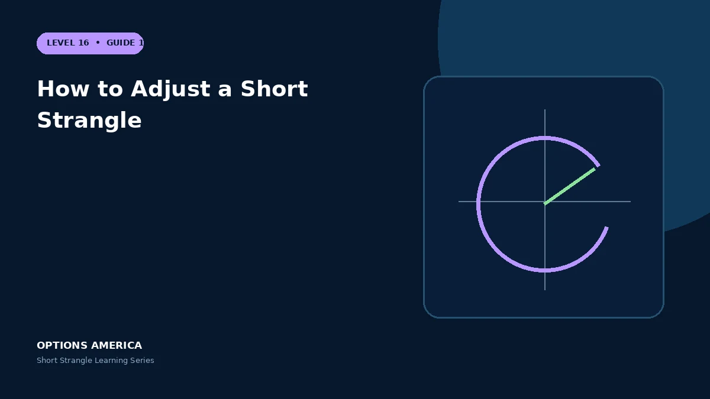

Compare rolling the untested side, moving a tested strike, extending time, adding wings and closing the trade.
Close the position
A full close is the cleanest response when the volatility or range thesis fails. It prevents a management decision from becoming a permanently extended position.
Roll the untested side
Moving the profitable option toward spot collects more credit and can reduce current delta. It narrows the range and increases whipsaw exposure after a reversal.
Roll the tested side
Moving the challenged strike out or forward can require more time and may change the credit. Recalculate breakevens, Greeks and total cash flows after the roll.
Add wings
Buying farther OTM options converts open tails into an iron condor or related defined-risk structure. Evaluate protection cost, liquidity and the risk left between strikes.
A practical example
Stock rallies toward the 110 call. Rolling the 90 put up to 100 collects credit and reduces short delta, but a reversal can quickly test the newly raised put.
This simplified scenario focuses on selected outcomes; live prices and risks will differ. Live option prices also reflect the underlying price, time decay, rates, dividends, liquidity and transaction costs. Greeks are theoretical estimates, not guarantees.
Build a risk-first trading plan
Before using how to adjust a short strangle, record the stock price, put and call strikes, expiration, total credit and contract multiplier. Calculate both breakevens, then estimate dollar loss beyond them under upside and downside gaps. A wide strike range improves the starting room but does not define either tail.
Stress several prices, time points and volatility levels, including a skew change that affects the put and call differently. Review delta, gamma, theta, vega and buying power for the complete portfolio. Multiple OTM positions can become tested together during a common market shock.
Define a profit target, maximum tolerated loss, tested-side trigger, margin reserve and latest exit date before entry. Decide whether an event is intentionally included and how assignment would be handled. Use multi-leg orders and confirm quantities after every fill, roll or partial close.
Document the result after exit, including slippage, assignment effects and the largest intraday exposure. Comparing the original forecast with the actual path helps distinguish a sound process from a lucky outcome and improves later strike, duration, margin-reserve and position-size choices under similar market conditions.
Frequently asked questions
Does rolling guarantee recovery?
No.
Can the trade be closed instead?
Yes.
What do wings change?
They can cap tail loss.
Continue the Short Strangle cluster
Explore related guides: When to Close or Roll a Short Strangle · Short Strangle Profit, Loss and Breakevens · Best Market Conditions for a Short Strangle. For a structured sequence, use the free Level 16 – Short Strangle course.
Options involve risk and are not suitable for every investor. This material is educational and is not investment, tax or legal advice. Greeks are theoretical estimates, and contract terms and broker requirements can vary.